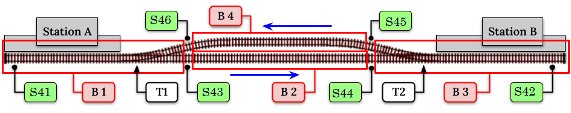

Example Objects and Sequences


On this page are a number of examples of EX‑RAIL sequences that you can lean from. How it All Works Together section of this web site also contains numerous more complex examples.
We will be using these objects in the examples:
A three aspect signal connected to Mega2560 I/O pins 22 (red), 23 (amber), and 24 (green)
A two aspect signal connected to Mega2560 I/O pins 25 (red) and 26 (green)
LEDs connected to pins vpins 164 and 165 of an MCP23017 I/O extender
Active low IR sensors connected to Mega2560 I/O pins 40 through 46
An active low push button on Mega2560 I/O pin 30
Turn Track Power On at Startup
The current production release of EX‑RAIL does not have commands for turning track power on or off, but if you assign a speed to a loco in a sequence it will automatically turn the track power on. Using this feature we can fudge turning the track power on at startup.
// if this is at the start of myConfiuration.h This will act like an AUTOSTART sequence
SETLOCO(9999) // select loco 9999
SPEED(0) // set the speed to 0. This will turn the tarck power on
DONE
Add a Roster
ROSTER ( 3,"Eng 3", "F0/F1/*F2/*F3/F4/F5/F6/F7/Mute/F9//") // Address 3, Eng 3, Function keys F0-F10
ROSTER(1224,"PE 1224","") // Motor Only Decoder, But use Engine Driver 'Preferences >In Phone Loco 'Sound'
ROSTER(1225,"PE 1225","Lights/Bell/*Whistle/*Short Whistle/Steam/On-Time/FX6 Bell Whistle/Dim Light/Mute")
ROSTER(4468,"LNER 4468","//Snd On/*Whistle/*Whistle2/Brake/F5 Drain/Coal Shvl/Guard-Squeal/Loaded/Coastng/Injector/Shunt-Door ~Opn-Cls/Couplng/BrakeVlv/Sfty Vlv/Shunting/BrkSql Off/No Momentm/Aux3/Fade Out/F22 Res/F23/Res//Aux 5/Aux6/Aux7/Aux 8")
Defining Servo Turnouts
As per the EX‑RAIL reference, turnouts/points are defined with the following syntax:
// Example
SERVO_TURNOUT(200, 101, 450, 110, Slow, "Example slow turnout/point definition")
/* An example definition for a servo connected to the second control pins of the first PCA9685
connected to the CommandStation, using the slow profile for prototypical operation:
The SERVO_TURNOUT parameters mean:
'200' = Unique ID within the CommandStation (note these are shared across turnouts/points,
sensors, and outputs)
'101' = The ID of the pin the servo is connected to, which would typically be the VPin ID
of the PCA9685 controller board
'450' = The angle to which the servo will move when the turnout/point is thrown
'110' = The angle to which the servo will move when the turnout/point is closed
'Slow' = There are five profiles to choose from that determine the speed at which a
turnout/point will move: Instant, Fast, Medium, Slow, and Bounce (note we don't
recommend Bounce for a turnout/point definition).
"The description" = A human-friendly description of the turnout/point that will appear in
WiThrottle apps and |Engine Driver|.*/
Creating Routes
A typical Route might be used to set a series of turnouts in response to a single button in a throttle. The EX-RAIL instructions to do this might look like
ROUTE(1,"Coal Yard exit")
THROW(1)
CLOSE(7)
DONE
Or you can write it like this
ROUTE(1,"Coal Yard exit") THROW(1) CLOSE(7) DONE
Or add comments
// This is my coal yard to engine shed route
ROUTE(1,"Coal Yard exit") // appears in the throttle
THROW(1) // throw turnout onto coal yard siding
CLOSE(7) // close turnout for engine shed
DONE // that's all folks!
Of course, you may want to add signals, and time delays
SIGNAL(22,23,24) // see the Defining Signals section
SIGNAL(25,0,26) // below for details
ROUTE(1,"Coal Yard exit")
RED(22)
THROW(1)
CLOSE(7)
DELAY(5000) // this is a 5 second wait
GREEN(25)
DONE
Automating Signals with Turnouts
By intercepting a turnout change command, it’s easy to automatically adjust signals or
automatically switch an adjacent facing turnout. Use an ONTHROW or ONCLOSE keyword to detect a particular turnout change:
ONTHROW(8) // When turnout 8 is thrown,
THROW(9) // must also throw the facing turnout
RED(22)
DELAY(2000)
GREEN(25)
DONE
ONCLOSE(8) // When turnout 8 is closed
CLOSE(9)
RED(25)
DELAY(2000)
GREEN(22)
DONE
Automating various non-track items
This normally takes place in a timed loop, for example alternate flashing of a fire engine’s lights. To do this use a SEQUENCE.
SEQUENCE(66)
SET(164) // sets output 164 HIGH
RESET(165) // sets output 165 LOW
DELAY(500) // wait 0.5 seconds
SET(165) // swap the lights
RESET(164)
DELAY(500) // wait 0.5 seconds
FOLLOW(66) // follow sequence 66 continuously
Note, however, that this sequence will not start automatically: it must be started during the startup process (see later) using START(66).
Stopping at a Station (simple loop)
Start with something as simple as a single loop of track with a station and a sensor (connected to pin 40 for this example) at the point where you want the train to stop.

Using an AUTOMATION keyword means that this automation will appear in the throttle so you can drive the train manually, and then hand it over to the automation at the press of a button.
* Technically, an automation can independently run multiple locos along the same path through the layout, but this is discussed later…
AUTOMATION(4,"Round in circles")
FWD(50) // move forward at DCC speed 50 (out of 127)
AT(40) // when you get to sensor on pin (40)
STOP // stop the train
DELAYRANDOM(5000,20000) // delay somewhere between 5 and 20 seconds
FWD(30) // start a bit slower
AFTER(40) // until sensor on pin 40 has been passed
FOLLOW(4) // and continue to follow the automation
The instructions are followed in sequence by the loco given to it; the AT command just leaves the loco running until that sensor is detected.
Notice that this automation does not specify the loco address. If you drive a loco with the throttle and then hand it over to this automation, then the automation will run with the loco you last drove.
Stopping at a Station - Adding Signals
Adding a station signal to the loop script is extremely simple, but it does require a mind-shift for some modellers who like to think in terms of signals being in control of trains! EX-RAIL takes a different approach, by animating the signals as part of the driving script. Thus set a signal GREEN before moving off (and allow a little delay for the driver to react) and RED after you have passed it.
SIGNAL(22,23,24) // see the Defining Signals section above for details
AUTOMATION(4,"Round in circles")
FWD(50) // move forward at DCC speed 50 (out of 127)
AT(40) // when you get to sensor on pin (40)
STOP // Stop the train
DELAYRANDOM(5000,20000) // delay somewhere between 5 and 20 seconds
GREEN(22) // set signal #22 to Green
DELAY(2500) // This is not Formula1!
FWD(30) // start a bit slower
AFTER(40) // until sensor on pin 40 has been passed
RED(22) // set signal #22 to Red
FOLLOW(4) // and continue to follow the automation
Point to Point Shuttle
Consider a single line, shuttling between stations A and B.

Starting from Station A, the steps may be something like:
Wait between 10 and 20 seconds for the guard to stop chatting up the girl in the ticket office.
Move forward at speed 30
When I get to B, stop.
Wait 15 seconds for the tea trolley to be restocked
Move backwards at speed 20
When I get to A, stop.
Notice that the sensors at A and B are near the ends of the track (allowing for braking distance, but don’t care about train length or whether the engine is at the front or back.) We have wired sensor A on pin 41, and sensor B on pin 42 for this example.
SEQUENCE(13)
DELAYRANDOM(10000,20000) // random wait between 10 and 20 seconds
FWD(50)
AT(42) // sensor 42 is at the far end of platform B
STOP
DELAY(15000)
REV(20) // Reverse at DCC speed 20 (out of 127)
AT(41) // far end of platform A
STOP
FOLLOW(13) // follows sequence 13 again… forever
Note a SEQUENCE is exactly the same as an AUTOMATION except that it does NOT appear in the throttle.
When the Command Station is powered up or reset, EX-RAIL starts operating at the beginning of the file. For this sequence we need to set a loco address and start the sequence:
SENDLOCO(3,13) // Start sequence 13 using loco 3
DONE // This marks the end of the startup process
The sequence can also be started from a serial monitor with the command </ START 3 13>.
If you have multiple separate sections of track which do not require inter-train cooperation, you may add many more separate sequences and they will operate independently.
Although the above is trivial, the routes are designed to be independent of the loco address so that we can have several locos following the same route at the same time (not in the end to end example above!), perhaps passing each other or crossing over with trains on other routes.
The example above assumes that loco 3 is sitting on the track and pointing in the right direction. A bit later you will see how to script an automatic process to take whatever loco is placed on the programming track, and send it on its way to join in the fun!
Multiple inter-connected trains
So what about routes that cross or share single lines (passing places etc)? Let’s add a passing place between A and B. S= Sensors, T=Turnout number. So now our route looks like this:

Assuming that you have defined your turnouts with TURNOUT commands.
SEQUENCE(11)
DELAYRANDOM(10000,20000) // random wait between 10 and 20 seconds
CLOSE(1)
CLOSE(2)
FWD(30)
AT(42) // sensor 42 is at the far end of platform B
STOP
DELAY(15000)
THROW(2)
THROW(1)
REV(20)
AT(41)
STOP
FOLLOW(11) // follows sequence 11 again… forever
All well and good for one loco, but with 2 (or even 3) on this track we need some rules. The principle behind this is
To enter a section of track that may be shared, you must RESERVE it. If you cant reserve it because another loco already has, then you will be stopped and the script will wait until such time as you can reserve it. When you leave a shared section you must free it.
Each ‘section’ is merely a logical concept, there are no electronic section breaks in the track. You may have up to 255 sections (more can be supported by a code mod if required).
So we will need some extra sensors (hardware required) and some logical blocks (all in the mind!):
{kind=link}
Todo
LOW - Fix sensor IDs in diagram to match example
We can use this diagram to plan routes. When we do so, it will be easier to imagine 4 separate mini routes, each passing from one block to the next. Then we can chain them together to form a full route, but also start from any block.
So… lets take a look at the routes now. For convenience I have used route numbers that help remind us what the route is for.
SEQUENCE(12) // From block 1 to block 2
DELAYRANDOM(10000,20000) // random wait between 10 and 20 seconds
RESERVE(2) // we wish to enter block 2… so wait for it
CLOSE(1) // Now we “own” the block, set the turnout
FWD(30) // and proceed forward
AFTER(43) // Once we have reached AND passed sensor 43
FREE(1) // we no longer occupy block 1
AT(44) // When we get to sensor 44
FOLLOW(23) // follow route from block 2 to block 3
SEQUENCE(23) // Travel from block 2 to block 3
RESERVE(3) // will STOP if block 3 occupied
CLOSE(2) // Now we have the block, we can set turnouts
FWD(20) // we may or may not have stopped at the RESERVE
AT(42) // sensor 2 is at the far end of platform B
STOP
FREE(2)
DELAY(15000)
FOLLOW(34)
SEQUENCE(34) // you get the idea
RESERVE(4)
THROW(2)
REV(20)
AFTER(45)
FREE(3)
AT(46)
FOLLOW(41)
SEQUENCE(41)
RESERVE(1)
THROW(1)
REV(20)
AT(41)
STOP
FREE(4)
FOLLOW(12) // follows Route 12 again… forever
Does that look long? Worried about memory on your Arduino…. Well the script above takes about 100 BYTES of program memory and no dynamic SRAM!
If you follow this example carefully, you’ll see it allows for up to 3 trains at a time, because one of them will always have somewhere to go. Notice that there is a common theme to this…
RESERVE where you want to go. If you are moving and the reserve fails, your loco will STOP and the reserve waits for the block to become available. *These waits and the manual WAITS do not block the Arduino process… DCC and the other locos continue to follow their routes!
Set the points to enter the reserved area. Do this ASAP, as you may be still moving towards them.
Set any signals.
Move into the reserved area.
Reset your signals.
Free off your previous reserve as soon as you have fully left the block.
In addition, it is possible to take decisions based on blocks reserved by other trains. The IFRESERVE(block) can be used to reserve a block if it’s not already reserved by some other train, or skip to the matching ENDIF. For example, this allows a train to choose which platform to stop at based on prior occupancy. It is features like this that allow for more interesting and unpredictable automations.
Starting the system
Starting the system is tricky, because we need to place the trains in a suitable position and set them going. We need to have a starting position for each loco, and reserve the block(s) it needs to keep other trains from crashing into it.
Warning
This EX-RAIL version isn’t ready to handle locos randomly placed on the layout after a power down!
For a known set of locos, the easiest way is to define the startup process at the beginning of the script. E.g. for two engines, one at each station.
// ensure all blocks are reserved as if the locos had arrived there
RESERVE(1) // start with a loco in block 1
RESERVE(3) // and another in block 3
SENDLOCO(3,12) // send Loco DCC addr 3 on to route 12
SENDLOCO(17,34) // send loco DCC addr 17 to route 34
DONE // don't drop through to the first sequence definition that follows in the script file
Hint
Some interesting points about the startup:
You don’t need to set turnouts, because each route is setting them as required.
Signals default to RED on power up, and get turned GREEN when a route clears them.
Drive-Away feature
EX-RAIL can switch a track section between programming and mainline.
Here for example is a launch sequence that has no predefined locos but allows locos to be added at station 1 while the system is in motion. Let’s assume that the track section at Station1 is isolated and connected to the programming track power supply. Also that we have a ‘launch’ button connected where sensor 17 would be and an optional signal (i.e. 3 LEDs) on the control panel connected where signal 27 would be.
SEQUENCE(99)
SIGNAL(22,23,24)
RED(22) // indicate launch not ready
AFTER(30) // user presses and releases launch button
UNJOIN // separate the programming track from main
DELAY(2000)
AMBER(22) // Show amber, user may place loco
AFTER(30) // user places loco on track and presses “launch” again
READ_LOCO // identify the loco
GREEN(22) // show green light to user
JOIN // connect prog track to main
START(12) // send loco off along route 12
FOLLOW(99) // keep doing this for another launch
The READ_LOCO reads the loco address from the PROG track and the current route takes on that loco. By altering the script slightly and adding another sensor, it’s possible to detect which way the loco sets off and switch the code logic to send it in the correct direction by using the INVERT_DIRECTION instruction so that this locos FWD and REV commands are reversed. (easily done with diesels!)
Next Steps - Detailed Reference
The previous pages have only been a small taste of what is possible with EX‑RAIL. Click here or click the Next button to explore the full capabilities of EX‑RAIL.